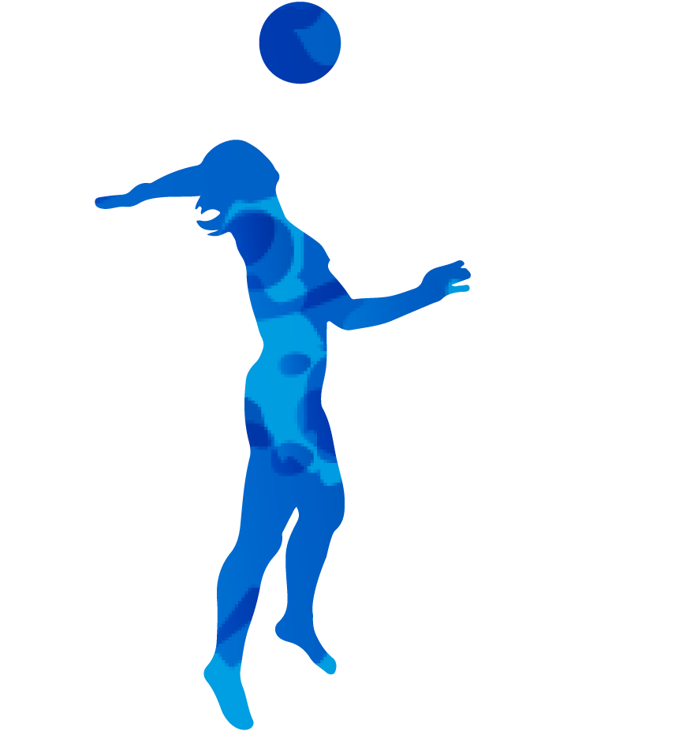

塞爾維亞女排是世界強隊之一，早在歐洲擁有一定地位。
2006至2011年間在多個世界賽事中奪得前列名次，
但其後經歷低迷時期，直到近年才在國際排壇再度急速冒起，
先後在2015年世界盃及2016年奧運奪得亞軍，成為當今頂尖的女排國家隊之一。
2018年，塞爾維亞女排在世錦賽上首奪金牌，亦是首次奪得三大賽的冠軍。
此為2016里約奧運球員名單 移動游標查看詳細資料

主攻手
- Tijana Malešević
- Бранкица Михајловић

副攻
- Mina Popovi
- Стефана Вељковић
- Maja Aleksić
- Јована Стевановић
- Милена Рашић

舉球員
- Бјанка Буша
- Slađana Mirković
- Маја Огњеновић
- Ана Бјелица
- Тијана Бошковић

自由球員
- Teodora Pušić
- Silvija Popović
點擊按鈕查看詳細資料
金牌紀錄
6次
- 世界排球錦標賽
- 世界女排大獎賽
- 歐洲排球錦標賽
- 歐洲排球聯賽
銅牌紀錄
6次
- 世界女排大獎賽
- 歐洲運動會
- 歐洲排球錦標賽
- 歐洲排球聯賽

FIVB排名
第3名